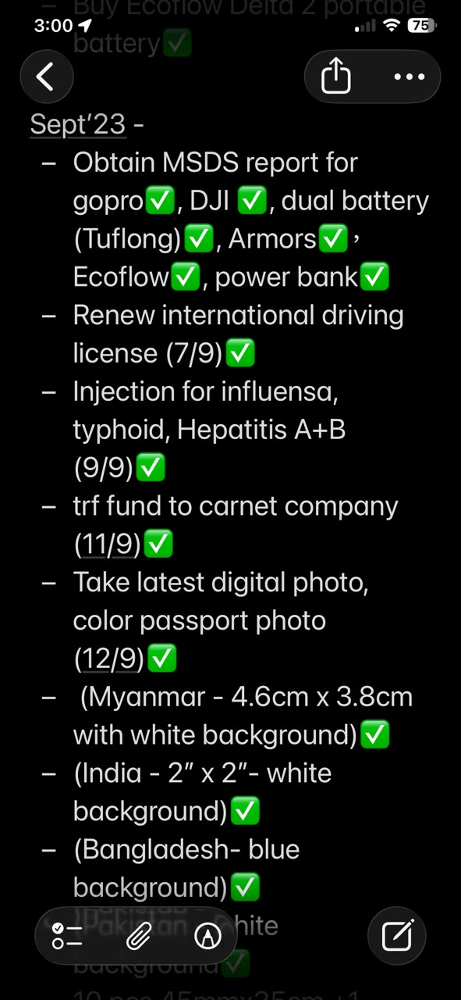

中文说明
计划路线之后，还要一项一项执行。
Excel 规划的是路线、边境、签证、保险、油价、营地和天气。 但真正要出发，还需要另一套 execution checklist。
一年前开始，我就要把每个月、每个日期该完成的事情写下来。 完成后，就 mark 一个 ✅。
这些事情包括 MSDS report、GoPro、DJI、dual battery、Ecoflow、power bank、 international driving license、influenza / typhoid / Hepatitis A+B injection、 transfer fund to Carnet company、digital photo、passport photo，以及不同国家需要的照片规格。
这些项目看起来很琐碎，但每一项都是出发条件的一部分。 少了任何一项，车可能不能上船，电池可能不能过关，文件可能不能用， 人也可能在路上增加风险。
所以这趟旅程不是突然发生的。 它是由很多个小小的 ✅ 推出来的。
English Memory Summary
The journey was executed before it was driven.
The route spreadsheet showed where Toyotaki would go. But before departure, Tuzi also needed an execution checklist: what to do, which month to do it, which date to complete it, and whether it had been done.
The checklist included MSDS reports for devices and batteries, renewal of the international driving license, vaccinations, Carnet payment, digital photos, passport photos, and different photo requirements for different countries.
These tasks were not glamorous, but they made departure possible. The journey was not built only by courage. It was built by completed tasks.
Heart Statement
出发不是一个动作，而是一串完成。
很多人看到的是我开车离开。 但在那之前，我已经完成了很多看不见的小步骤。
Before the road began, there were checklists. Before freedom, there were many green ticks.